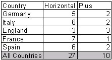
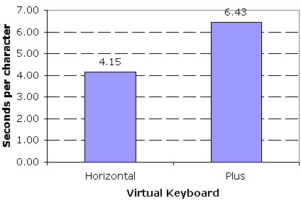

We did more usability testing of virtual keyboards in England, France, Spain, Italy, and Germany. The data on the different languages will be covered in subsequent versions of the Virtual Keyboard document in the XDK. We tested the plus model and a horizontal model with European gamers in each country. We also explored the possibility of using a cell phone type of keyboard as cell phone usage and especially short messaging over cell phones is much more prevalent in Europe than in the United States.
Across all of the countries, participants preferred the Horizontal keyboard (27) over the Grid 8 keyboard (10). The breakdown by country can be seen below. A few of the participants were interested in a cell phone model for virtual keyboards, but most didn't like typing on their cell phones and only used the cell phone model because there wasn't an alternative.

The time necessary to input text was similar to the first U.S. study. We optimized the plus model by having fewer levels than in the first iteration, and that probably accounts for the increase in speed.

Based on the findings of this test and the first usability test we decided to pursue the horizontal layout in future virtual keyboard research. At this point we had usability tested layouts with 45 gamers and the horizontal type was preferred 31 to 14. The horizontal model was also significantly faster in terms of input to the Plus model. Finally, gamers were able to learn to use the horizontal model more quickly and easily.